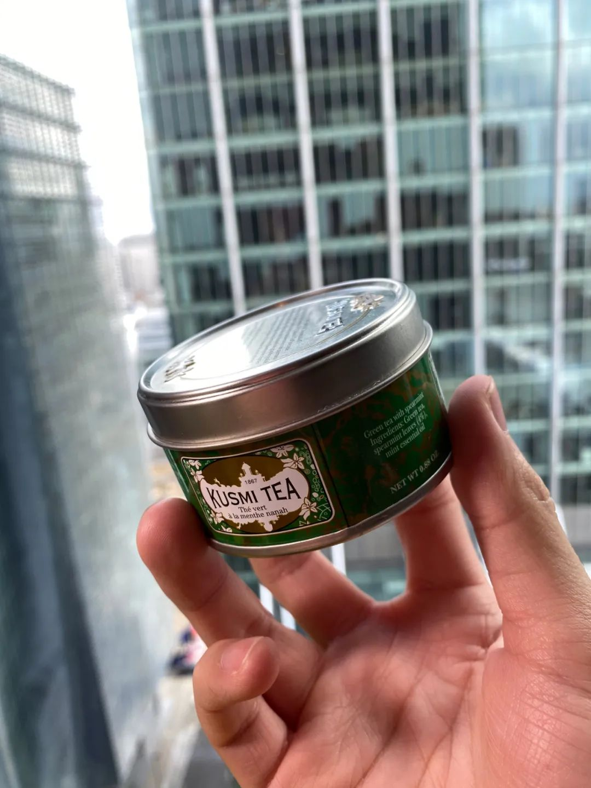
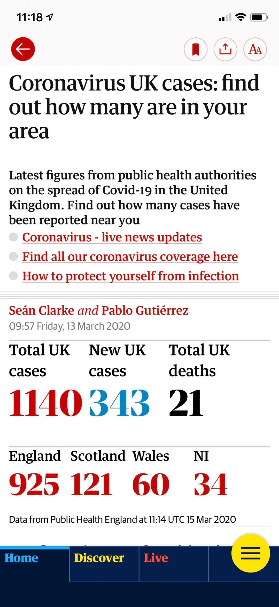

亲历美国疫情转折，口罩一夜逆袭，中美防疫天差地别
原文链接 备份链接 编者按： 今天有两个新消息：好消息是，特朗普没感染，坏消息是，前一条消息并没有让美国人松一口气。相反，这两天美国的疫情紧张程度骤增，而这种紧张又通过各种社交媒体实时地传播到世界各地。 美国内部对于特朗普政府的疫情反应和 …

今天是3月15日，月相为60%的下弦月。
It is March 15 with a 60 percent of Last Quarter.
距离新月还有 9 天。
There are 9 days until New Moon.
文 || 白清扬
既然是日记，我就放自己喜欢的歌了。
“She’s Lost Control”, Joy Division.
一
因为不知道该写什么，我在刚刚打开了三十秒、空空如也的word文档前站了起来，走到逼仄的灶台去泡了一杯苦荞茶。
我本来没想泡苦荞茶的，我想泡的是Kusmi Tea公司的留兰香绿茶。我其实不爱喝这种“勾兑”的花茶，但是留兰香和精油混迹在茶叶里的味道让我觉得它有助于睡眠。想必是绝佳的睡前饮品。

△ Spearmint即“留兰香”，我至今也不知道“essential oil”是什么。这款茶还是很不错的。
还有一个多小时就要洗澡、准备睡觉了。真正的自由或许就是你可以自由决定今晚是健康早睡还是刷个通宵。话说回来，如果头一天早睡、第二天便熬夜，似乎头一天的早睡也就并不健康了。
写到这里，我忽然忘记点上床边的香薰蜡烛，然后为加湿器换水了。
二
今天下午，一位在伦敦卡斯商学院读书的好友将学校发给她的邮件截下图发给我，并连发四条消息，每一条不超过两个汉字，其中还有两条只有标点符号。但是这四条消息包含了巨大的信息量：如卡斯这般冥顽不化，也终于决定改上网课、取消期末考试并寻求替代方案了。她的男友身在美国。取道美国，并在一段时间以后中转回家，便成为一条现实的道路。
至于为什么身在英国要往美国跑，也不是没有原因。昨天，特朗普发表讲话，宣布全美国进入国家紧急状态，同时放开COVID-19的免费测试。讲话一出，原本在“摆烂”争夺战中与鲍里斯·约翰逊并驾齐驱的特朗普瞬间摆出了放弃比赛的姿态，独留这在纽约出生、外貌神似特郎的英国首相形单影只在边沁铺下的道路上一路前进。美国貌似比英国安全了。确实，《卫报》刊登的民调显示，只有36%的英国人信任鲍里斯的抗疫政策。

△ 好自为之吧……
还有一件事令好友更加焦虑：特朗普宣布从伦敦时间下周二上午四点开始正式切断与英国和爱尔兰的交通往来。留给她的时间实在不多了。匆匆离开英国，学业、租房、毕业等一系列问题都悬而未决，却不知下次回到泰晤士河畔，会是什么时候了？
三
同样的疑问，也盘桓在我的脑海里。这是我自我“隔离”的第十一天。说是自我隔离，其实我并无症状；在这十一天里，我也去了三次超市，并非彻底闭门不出。不过，我原无其他理由出门，而唯一需要定期拜访的学校早在十天以前就确诊了第一位患者。“闭门造车”，这个成语曾经用来形成那些把自己关在房间里，不去体悟世间百态便一通胡写乱写的作家、学者；而如今却成为我专心致志宅在家里撰写论文的真实写照。
四十八个小时以前，伦敦的确诊人数是563例。当时，我和朋友说，两天以后就破千了，一定要减少出门，做好防护。果不其然，今天早上的数据便来到了1140例。（根据《卫报》的实时数据更新，这个数据是3月13日上午9点57分更新的。今天「3月15日」上午11：40，我进入实时数据库，数字依然停留在两天前，毫无变化。）

△ 我没说英国政府“cover the truth”哦。
深夜，拉开落地窗，伦敦世界闻名的妖风仿佛要卷起防护栏里的我，将我送上高空。或许此时伦敦的高空是值得一去的。当我飞在风中，从整座城市海拔最高的伦敦金融城四下望去，我便可以验证今天公众号所说的是真是假了。那篇公众号文章说，今天下午的伦敦已是凄凉萧瑟、少见行人了。
四
欧洲已经是疫情中心了。对于我们这些旅居海外的中国人而言，此时更应该团结一致，一起战斗，处处为他人着想。也总有一些人，他们对自己是否感染表现出一副无所谓的样子，却也并不关心与自己朝夕相处的人是否会因为自己的轻率招致危险。
下午，同样困在伦敦的朋友跟我说，她的室友每天不戴口罩出门，昨天晚上还带了一大群朋友到家里玩儿，各个不戴口罩。好言相劝，表现出一副无所谓的样子，说：“也没那么严重。”距离我当时的出离愤怒已经过去五个小时了；如今打字打到这里还是心头上火。他明明看到了他的室友对于疫情的担心，也看到了中国在过去三个月里走过的艰难，更看到了如今疫情在伦敦爆发的恶劣局势，他却毫不重视。他并不在乎自己的行为是否会对他人产生影响。这令人生气。
重要的真的不是“我戴不戴口罩是否会显著降低自己感染的几率”。重要的是，“我戴上口罩会显著降低我身边人的感染风险”。
这种非常时期，的确可以看出一些平时看不到的东西。
五
说是要写欧洲隔离日记，却也不清楚自己能否坚持下来。同学、朋友一个一个收拾细软，我却选择再留守三十天。这三十天，就让我记录一下每天在英国面对疫情爆发的感受吧。
快到夜里十点，是时候打开YouTube上任意一段郭德纲与于谦的活儿，给加湿器递上精油，准备躺到床上翻看《白先勇作品集》了。

白清扬往期文章
散文 || 嫁给怒放的青春
杂文 || 肖战极端粉丝做错了三件事
批评/杂文 || 中华文明璀璨的诗歌文化是指引我们的唯一向导
杂文 || 让我们的声音，成为推动历史前进的声音
抗疫特辑 || 不要让造谣与攻击成为群众唯一的权力
责任编辑、排版：白清扬。
封面图、首图、尾图：唐颂。

长按二维码向我转账
受苹果公司新规定影响，微信 iOS 版的赞赏功能被关闭，可通过二维码转账支持公众号。
原文链接 备份链接 编者按： 今天有两个新消息：好消息是，特朗普没感染，坏消息是，前一条消息并没有让美国人松一口气。相反，这两天美国的疫情紧张程度骤增，而这种紧张又通过各种社交媒体实时地传播到世界各地。 美国内部对于特朗普政府的疫情反应和 …
原文链接 备份链接 当地时间2月29日，美国华盛顿州西雅图市国王县卫生官员报告称，一名50多岁的男性新冠肺炎患者当天在当地一家医院死亡。这是美国首例新冠肺炎患者死亡该病例，就死者感染路径，美国疾控中心国家免疫和呼吸系统疾病主任梅索尼 …
原文链接 备份链接 应对重大公共卫生事件对美国大选影响举足轻重，福特总统在1976年连任失败被指一定程度上受到应对猪流感事件不利的影响，特朗普目前应对疫情的表现被美国媒体称为“灾难”，他能亡羊补牢，避免重蹈覆辙吗 文 |《财经》记者 王晓 …
原文链接 备份链接 1月23日凌晨，除夕前夜，武汉宣布交通封城。如果没有这场疫情，丹丹现在已经到了河南，和事先从当阳赶来的姐姐在一起。 这是她计划已久的旅行。因为工作忙，假期少，按照惯例，丹丹过去几年都选择在春节期间出去旅游。 20号那 …
原文链接 备份链接 根据美国疾病控制与预防中心和各州公共卫生部门统计，截至美东时间3月8日晚7点，全美共报告新冠肺炎确诊病例572例，死亡21例，治愈10例。8日美国新增113例新冠肺炎，新增死亡病例2例。 目前，新冠肺炎已波及全美34 …